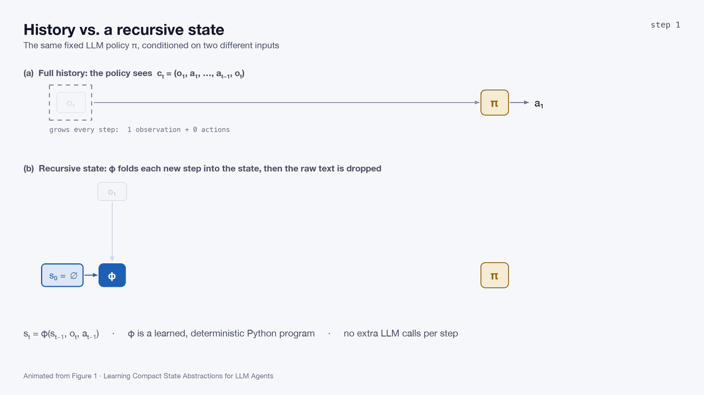

What does an LLM agent actually need to remember? Instead of feeding the agent its whole history, we learn a small Python program \(\phi\) that keeps a compact, readable state. It runs without any extra model calls, and the agent stays just as successful.
The idea
A ReAct-style agent appends every observation and action to its prompt. That is sufficient by construction, but most of it stops mattering: the rooms already searched, the drawer that was empty, the step that failed. We ask what the agent actually needs to carry forward, and learn a program that keeps only that.
LLM agents commonly use the full interaction history as a proxy for state, retaining all past observations and actions regardless of whether they remain relevant. We instead ask what information an agent actually needs to carry forward. We define agent state as a compact abstraction of interaction history that preserves the competence of a fixed reference agent, with the minimal such abstraction as the ideal. Because matching the reference agent's behavior is unnecessarily restrictive and difficult for black-box policies, we define sufficiency through task performance rather than behavior matching. We represent state abstractions as deterministic recursive programs and search over them using an LLM-guided genetic algorithm. Across ALFWorld and ScienceWorld, the learned abstractions preserve near-reference task success while reducing mean policy input by up to 71% and 57%, respectively. The resulting programs are directly inspectable, providing an explicit account of what information is retained, updated, and discarded during interaction.
An illustrative episode. The state fields follow the learned Pick & Place program shown below. Token counts are rough (about four characters per token) and leave out the agent's reasoning, which full history would also keep. \(\phi\) reads the new observation and action, updates its fields, and throws the raw text away: once the mug is found, the search frontier is cleared.
Formulation
The policy \(\pi\) is a fixed black-box LLM. The only thing we learn is the abstraction \(\phi\), which updates the state recursively, starting from \(s_0 = \varnothing\). The update has to be recursive: computing the state from the whole history would mean keeping the history.

An agent state is a compact abstraction of the interaction history that preserves the performance of a reference agent acting on the full history. An ideal agent state is the minimal such abstraction.
Search
The objective is non-differentiable and can only be measured by running the agent, so we search over programs with a genetic algorithm. Search starts from a single naive program that concatenates history. An LLM proposer writes each child, and a reflector compares rollouts with full-history references to point out what information the child lost.
Pick one parent (mutation) or two (crossover, p = 0.5) from a population of 8.
The proposer sees the parent code, parent rollouts, full-history rollouts and the reflector's feedback.
Measure success and policy tokens on training tasks, then check feasibility.
If infeasible, the reflector diagnoses what was dropped or mis-tracked and the proposer revises.
Only the highest-fitness program from the repair chain enters the population.
task families. A single LLM-written program is usually not good enough.
across ten searches, all from mutation or crossover proposals.
improvements became feasible or better only after reflector-guided repair.
Result 1 · Held-out tasks
Each task family gets its own \(\phi\), learned on training instances and evaluated on held-out ones. The policy is GPT-5.6 Luna in a ReAct scaffold. Baselines are a fixed LLM summarizer and ACON, which learns compression guidelines. Both baselines call an LLM at run time to write summaries, and their token counts exclude those calls. \(\phi\) is plain Python.
Result 2 · Longer horizons
On BabyAI GoTo (3×3 rooms, 576-step cap), full history reaches 27.5k tokens per call by the step cap. \(\phi\) levels off at about 250 tokens from step 25 onward, tracking heading and position by dead reckoning and remembering where the target was last seen. Over a full episode that is 29× fewer input tokens, and the difference in success is not significant (exact McNemar, p = 0.18).
On ALFWorld and ScienceWorld, full history adds 24–36 tokens per step in every family. \(\phi\) adds far fewer, except on Two Objects and Forces, where the learned \(\phi\) is itself a bounded recent history.
Result 3 · Is it real?
LLM policies sample their responses, so one run can mislead. We re-ran \(\phi\), full history and a token-matched recent-history window three times on all 254 held-out instances.
95% CI [−1.8, +5.3]. No systematic difference, and the sign holds in every run (+0.4 to +3.5 pp).
95% CI [+5.9, +13.9], with a window matched to \(\phi\)'s length. Up to +25.5 pp on Pick & Place.
The lowest of the three methods (full history 1.0, window 1.8).
| Split | n | \(\phi\) − full | 95% CI |
|---|---|---|---|
| Seen | 68 | +1.5 pp | [−4.4, +7.4] |
| Unseen | 134 | −1.5 pp | [−7.5, +4.5] |
\(\phi\) scores 0.81 on seen rooms and 0.86 on unseen ones: no sign of overfitting.
We ran each \(\phi\) learned with GPT-5.6 Luna, unchanged, with Qwen-3.5-397B. The pooled ALFWorld difference from Qwen with full history is −1.5 pp (95% CI [−5.9, +2.5], n = 202), with token reductions of up to 69%. Transfer is not guaranteed, because sufficiency is defined relative to a policy. When you switch agents, the intended use is to re-run the search.
Result 4 · What the state contains
Across families, the programs turn raw text into persistent variables and discard observations once they have been absorbed. What they keep depends heavily on the task. ALFWorld programs recover navigation, search, object and transformation state. ScienceWorld programs also need entity resolution, relations, device settings and process variables. Where token savings were small, the search settled on a bounded recent history.
Excerpt of the final learned \(\phi\). Normalization and boilerplate are omitted.
To find out which fields the policy actually needs, we hide one group at a time. \(\phi\) keeps updating its full state, and only the policy's copy is masked. Seven of the eight groups matter, and every one of those confidence intervals excludes zero.
The agent can depend on fields it never mentions. On Clean & Place, hiding the flags that record which objects are already clean drops success from 0.73 to 0.04: the agent finds the object, then keeps cleaning it until it runs out of steps. Hiding the goal has no effect, because the task prompt already states it.
Use the results
Each table is available for download so you can compare against it, re-plot it or check it. Success is the fraction of held-out episodes solved. Tokens are mean policy input tokens per step.
Search cost. All ten searches together used 860 meta-LLM calls (17.7M tokens) and 5,948 environment rollouts. This is a one-time cost per task family, and the resulting program runs for free at deployment.
Limits. We find compact, sufficient states within a restricted program class. We do not certify minimality. The achievable reduction varies a lot by family: Two Objects and Forces stay close to bounded histories, and Forces ends up slightly larger than full history.
Citation
@article{chittepu2026compact,
title = {Learning Compact State Abstractions for {LLM} Agents},
author = {Chittepu, Yaswanth and Addanki, Raghavendra and Rao, Anup
and Kveton, Branislav and Niekum, Scott},
journal = {arXiv preprint arXiv:2611.31800},
year = {2026}
}